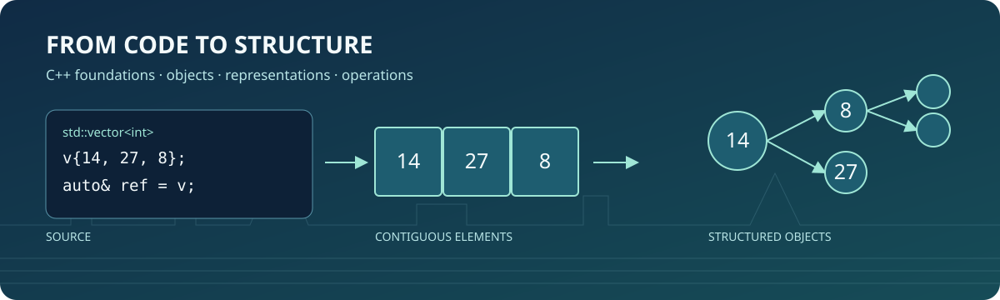

Week 1 · Foundations · Interactive lesson · Version 1
C++ Foundations: From Python to C++
Understand what your data means, how it is represented and what changes when code executes.

Essential path: sections 1–12 (30–45 minutes); allow about 60 minutes with examples. Browser models simulate selected C++ semantics; they do not compile or execute C++. Self-check progress is stored locally in your browser, not submitted to Moodle.
1. Why data structures matter
Start with a problem, not a container name. A playlist needs the next track; a triage system needs the highest priority; a spell checker needs membership; a route planner needs connections. The same data may be organized in different ways for different workloads.
Self-check: a document editor inserts near the cursor repeatedly. What should influence the representation?
The location and frequency of insertion, traversal and access matter. Do not choose a structure solely because it has an attractive name.
2. One ADT, different representations
An abstract data type specifies operations and their meaning. A sequence may be represented by contiguous elements or by linked nodes. The same logical get(index) can require different work.
Access microscope
Values are 14, 27, 8, 42, 19, 36. Choose a target index, predict the number of visits, then step through the linked sequence.
Direct indexed access is constant time; walking from a linked head to index i takes i+1 node visits. These are conceptual access counts, not CPU timings. Linked nodes and pointers will be treated in Weeks 2 and 4.
3. Why C++?
C++ combines abstraction with explicit control over representation, object lifetime and resource use. Stroustrup began C with Classes in 1979, drawing on C and Simula. The first ISO standard appeared in 1998; C++11 began a major modernization; our course uses C++20. The language is a means of studying data structures, not the end in itself.
See Stroustrup's FAQ for historical context.
4. From source to execution
A compiler translates source; a linker resolves definitions; the executable is then run. Tests compare behaviour with expectations. In Codespaces, the terminal and compiler run on a remote Linux machine, not in the browser.
Build and diagnose
Try a warning and a logical error: neither necessarily stops the build. Real diagnostic wording varies by compiler.
Minimal program
#include <iostream>
int main() { std::cout << "Ready for C++!\n"; }
Open source file · Expected output: Ready for C++! (\n means newline).
5. From Python to C++
Python names bind to objects; assignment of a list normally shares the object. A C++ vector copy creates independent elements. Python uses object sharing for function arguments; C++ permits value and reference parameters. C++ types are static, even when deduced using auto.
Python
a = [8, 3]
b = a
b[0] = 1C++
std::vector<int> a{8, 3};
auto b = a;
b[0] = 1;Predict a[0] in both languages, then reveal
Python: 1, shared list. C++: 8, independent vector copy. The next object simulator lets you compare copying and reference binding explicitly.
Predict 7 / 2 in Python 3 and C++ using int operands
Python: 3.5. C++: 3. Integer division truncates toward zero.
6. Static types and strings
Static types constrain operations before execution. auto infers a type; it does not turn C++ into a dynamically typed language. std::vector<int> stores integers, while a std::string stores a sequence of char elements; for UTF-8 these are bytes, not necessarily complete characters.
Which declaration is ill-formed: int x = 3; or int x = std::string("3");?
The second. A string is not implicitly converted to an int. Explicit parsing is a separate operation.
Static types
#include <iostream>
int main() {
auto count = 7; // int
double ratio = 7.0 / 2;
std::cout << count / 2 << " " << ratio << "\n";
}
Open source file · Expected output: 3 3.5 (\n means newline).
String indexing
#include <iostream>
#include <string>
int main() {
std::string name = "Riga";
name.at(0) = 'r';
std::cout << name << " " << name.size() << "\n";
}
Open source file · Expected output: riga 4 (\n means newline).
7. Vector playground
A std::vector<int> stores elements contiguously. Indexing is zero-based. The vector's own object and its element storage are distinct; allocated capacity may exceed size. Week 3 explains allocation and amortized append.
Edit a vector
The requested operation is displayed even if the model rejects invalid input. Do not execute rejected operations in C++. Offsets assume a four-byte int and show only occupied element storage. They are relative offsets, not real addresses. Shift counts are logical index changes; allocation, relocation and CPU costs are not measured.
Vector operations
#include <iostream>
#include <vector>
int main() {
std::vector<int> v{8, 3, 6};
v.push_back(2);
v.erase(v.begin() + 1);
for (int x : v) std::cout << x << " ";
std::cout << "\n";
}
Open source file · Expected output: 8 6 2 (\n means newline).
8. Values, copies and aliases
Copying initializes a new object. Binding a reference introduces an alias for an existing object, not another independent value. A const reference restricts modification through that alias, but other non-const access paths can still modify the same object.
Object identity explorer
Predict which object changes before pressing a button. The symbolic IDs A and B represent distinct objects, not memory addresses. A C++ reference cannot be reseated after initialization.
Vector copy
#include <iostream>
#include <vector>
int main() {
std::vector<int> a{8, 3};
auto b = a;
b.at(0) = 1;
std::cout << a.at(0) << " " << b.at(0) << "\n";
}
Open source file · Expected output: 8 1 (\n means newline).
Reference alias
#include <iostream>
int main() {
int a = 7;
int& b = a;
++b;
const int& view = a;
std::cout << a << " " << view << "\n";
}
Open source file · Expected output: 8 8 (\n means newline).
9. Function parameters and const
Pass by value initializes a separate parameter. Pass by non-const reference provides access to the caller's object. Const reference permits reading without copying, but not mutation through that reference.
Trace a function call
For large containers, pass-by-value can copy many elements. A const reference avoids that copy when only reading. For small scalars, value parameters are often simpler and appropriate.
Function parameters
#include <iostream>
void change_copy(int x) { ++x; std::cout << x << "\n"; }
void change_original(int& x) { ++x; }
void inspect(const int& x) { std::cout << x << "\n"; }
int main() {
int n = 4;
change_copy(n);
inspect(n);
change_original(n);
inspect(n);
}
Open source file · Expected output: 5\n4\n5 (\n means newline).
10. Records, classes and invariants
A struct groups related fields. A class can hide a representation behind public operations (structs can do this too; default access differs). Consider a bounded counter with invariant 0 ≤ value ≤ 10. Its increment operation must reject an increment at 10.
Can private fields alone establish an invariant?
No. Every constructor and modifying operation must preserve it. Tests should cover boundary cases.
Record fields
#include <iostream>
#include <string>
struct Book { std::string title; int pages; };
int main() {
Book b{"Atlas", 120};
std::cout << b.title << " " << b.pages << "\n";
}
Open source file · Expected output: Atlas 120 (\n means newline).
Bounded counter invariant
#include <iostream>
class Counter {
int value_ = 0;
public:
bool increment() {
if (value_ == 10) return false;
++value_;
return true;
}
int value() const { return value_; }
};
int main() {
Counter c;
for (int i = 0; i < 12; ++i) c.increment();
std::cout << c.value() << "\n";
}
Open source file · Expected output: 10 (\n means newline).
11. Self-check
These are independent formative questions, not assessed Moodle quiz items. Answer, read the explanation, retry if necessary, and compare your first prediction with the result.
Practice bank
12. Practical work and references
Explore → predict → verify → implement → reflect. Use your own fork and Codespace for real C++ execution. The website is not a compiler and does not submit grades.
Next: use hello.cpp, broken.cpp, warning.cpp, value_reference.cpp, vector_basics.cpp, copy_alias.cpp and sequence.cpp in the original lab. Do not substitute the browser models for the assessed assignment.
- Week 1 lab and Codespaces instructions
- Week 1 lecture and slides
- Course syllabus
- Independent examples and build commands
- C++ reference · Git and Codespaces · cppreference: vector
Week 2 extends this object model to pointers, storage and lifetime. Week 3 investigates dynamic arrays and capacity.